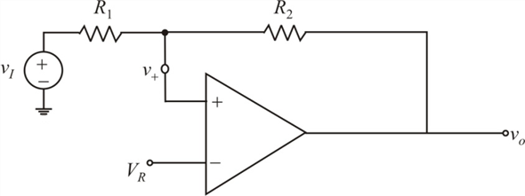

Step 1:
Refer to Figure 17.20 (a) in the text book for the bistable multivibrator circuit with positive feedback loop.
Disconnect the negative input terminal from ground and connect it to a reference voltage
.

Step 2:
(a)
The op-amp’s saturation levels are  and
and
If the circuit is in the positive stable state with , positive values for  have no effect. To trigger the circuit into the
have no effect. To trigger the circuit into the  state,
state,  must be made negative and of such a value as to make decrease below zero. Thus, the low threshold voltage is found by substituting and .
must be made negative and of such a value as to make decrease below zero. Thus, the low threshold voltage is found by substituting and .
Apply Kirchhoff’s current law to the positive input of the op-amp.

Thus, the threshold voltage  is .
is .
Step 3:
Similarly, when the circuit is in the negative output state with , negative values of will make  more negative with no effect on operation. To initiate the regeneration process that causes the circuit to switch to the positive state,
more negative with no effect on operation. To initiate the regeneration process that causes the circuit to switch to the positive state,  must be made to go slightly positive. The value of
must be made to go slightly positive. The value of  that causes this to happen is the high threshold voltage , which can be found by substituting and .
that causes this to happen is the high threshold voltage , which can be found by substituting and .
Apply Kirchhoff’s current law to the positive input of the op-amp.
Thus, the threshold voltage is .
Step 4:
(b)
Consider the equation for threshold voltage, .
Substitute V for , for  and for
and for  .
.
…… (1)
Consider the equation for threshold voltage, .
Substitute V for , for and 0 for .
…… (2)
Step 5:
Subtract equation (1) from (2).
Thus, the resistance  is .
is .
Substitute for in equation (2).
Thus, the voltage is .